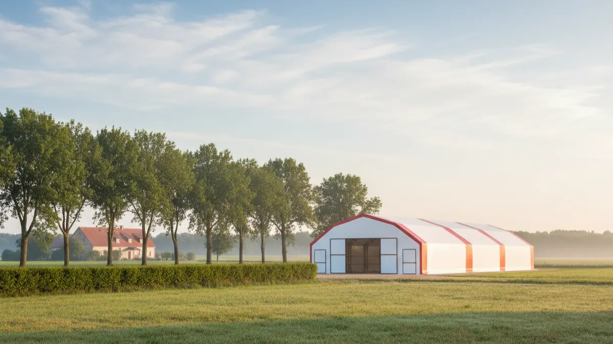
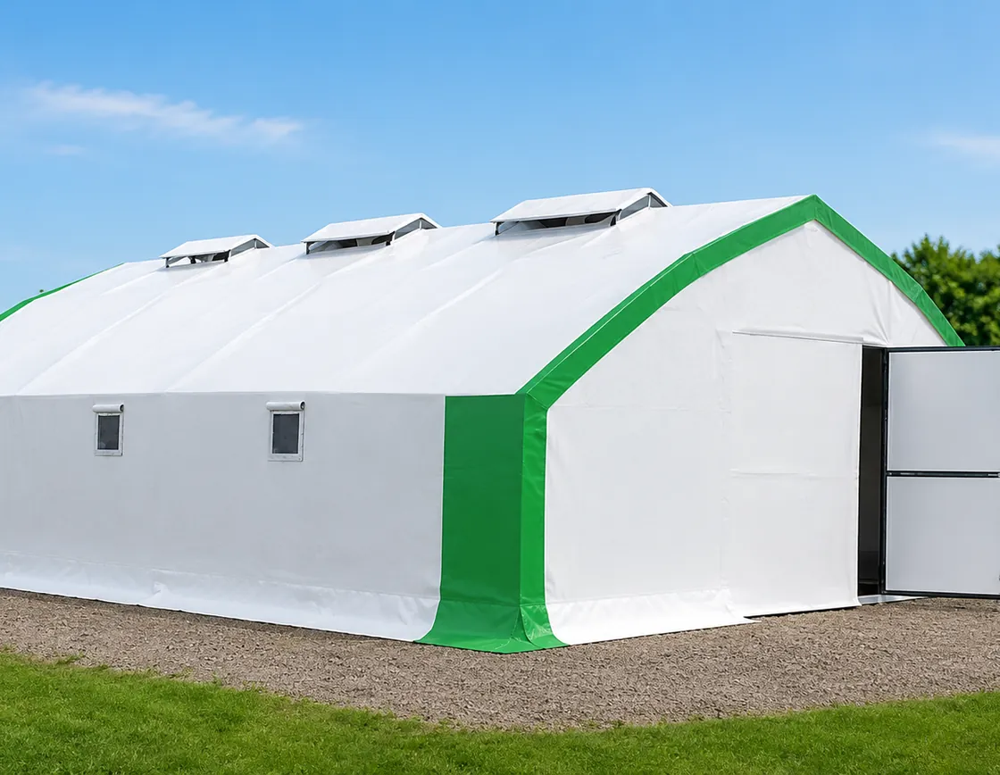

Kümes nereye kurulmalı? Konum, mesafe ve komşu şikâyeti
Kümesin yerini yanlış seçince tavuğu da yemi de değiştirirsin ama arsayı yerinden oynatamazsın. Rüzgâr, mesafe, drenaj ve komşu; kazığı çakmadan bilmen gereken her şey.

Kümesi kurarken çoğu üretici önce "kaç tavuk alırım"a kafa yorar, yeri en sona bırakır. Yanlış. Yeri yanlış seçtin mi, o hatayı sonra parayla düzeltemezsin. Tavuğu değiştirirsin, yemi değiştirirsin, hatta kümesi bile taşırsın; ama meraya sırtını dönmüş, cereyanı yiyen, kokusunu komşunun penceresine üfleyen bir arsayı yerinden oynatamazsın. Köye dönenlerin çoğu ilk kışı ya da ilk yaz sıcağını gördükten sonra "keşke şu tarafa kursaymışım" der. O keşke, işin en pahalı cümlesidir.
Bu yüzden traktörü çağırmadan, kazığı çakmadan önce arsanın üstünde bir gün geçir. Rüzgârın nereden estiğine, sabah güneşinin nereye vurduğuna, yağmurda suyun nereye biriktiğine bak. Kümes yeri seçimi dediğimiz şey, aslında bu üç dört saatlik gözlemin karşılığıdır.
Kümes yeri seçimi: önce hâkim rüzgârı oku
Sahada ilk sorduğum şey şudur: "Buranın rüzgârı hangi yönden gelir?" Çoğu köylü bunu ezbere bilir, çünkü harmanı ona göre savurmuştur. Sen de öğren. Türkiye'nin büyük bölümünde hâkim rüzgâr kuzeyden ya da kuzeybatıdan eser; ama her vadi, her yamaç kendi kuralını koyar. Önemli olan senin arsanda hangi yönden estiği.
Kural basit: kümes, hem senin hem komşunun evinden rüzgâr aşağısında olacak. Yani rüzgâr önce evlere, sonra kümese uğrasın; kokuyu ve tozu alıp boş araziye, tarlaya götürsün. Kokuyu doğrudan komşunun bahçesine üflüyorsa, o kümesi ne kadar temiz tutarsan tut, şikâyet er geç kapıya gelir. Rüzgâr yönünü ihmal edip sonra kokuyla boğuşmak yerine, havalandırmayı ve altlığı en baştan doğru kurmak gerekir; bunun detayını kümes havalandırması ve koku kontrolü yazısında ayrı ayrı yazdım.
Bir de cereyan var. Rüzgârın estiği yöne kümesin uzun ve açık cephesini verirsen, kışın içerisi buz keser. Uzun ekseni hâkim rüzgâra dik değil, mümkünse ona paralel ver; giriş kapısını rüzgâraltına al. Yoksa her fırtınada sürü üşür, fazladan yem yakar, verim düşer.
Kümes eve mesafe: kokuyu nereye gönderiyorsun?
"Kümes eve ne kadar uzak olmalı?" Bunun tek bir rakamı yok ama saha kuralı şudur: kendi evine en az 15-20 metre, komşunun meskenine ise olabildiğince uzak. Kendi evine çok yakın kurarsan yazın sinek ve koku sofrana kadar gelir; çok uzak kurarsan da her akşam yem, su, yumurta için gidip gelmek belini büker. 100-300 tavuklu bir işletmede o yolu günde en az 4-5 kez yürürsün; bunu hesaba kat.
Komşu tarafı daha hassastır. Aranızda mümkünse 40-50 metre, arada da bir ağaç sırası ya da sık bir çit olsun. Kavak, iğde, dut gibi hızlı büyüyen bir ağaç perdesi hem rüzgârı keser, hem kokuyu tutar, hem de görüntüyü kapatır. Komşu kümesi görmüyorsa, kokusunu almıyorsa, sesini duymuyorsa şikâyet etme ihtimali yarı yarıya düşer. Görünmeyen kümes, dert olmayan kümestir.
Güneş, gölge ve su baskını: zeminin altında ne var?
Kümesin uzun cephesi güneye ya da güneydoğuya baksın. Kışın alçaktan gelen güneş içeri girer, altlığı kurutur, tavuğu ısıtır, bedava D vitamini olur. Ama yaz için gölge de şart; güneyden gelen öğle güneşini kesecek bir saçak, bir ağaç ya da gölgelik olmazsa yazın içerisi fırın gibi olur. Yönü kışa göre kurup yazı unutan çok üretici gördüm; ikisini birden düşünmek lazım. Kış tarafını kışın kümes nasıl sıcak tutulur, yaz tarafını yazın kümes nasıl serin tutulur yazılarında ayrı ayrı ele aldım.
Sonra ayağının altına bak. Kümes asla çukura, dere yatağına ya da suyun biriktiği alçak noktaya kurulmaz. İlk sağanakta zemin çamura döner, altlık ıslanır, amonyak patlar, tavuğun ayağı hastalanır. Arsanın hafif meyilli, suyun kendiliğinden aktığı bir noktasını seç; gerekiyorsa kümesin üst tarafına drenaj hendeği aç, suyu kümesten öteye yönlendir. Zeminin toprak mı, şap mı, kilit taşı mı olacağı ayrı bir karar; hangisinin sana uyacağını kümes zemini ne olmalı yazısındaki karşılaştırmayla tart.
Elektrik, su ve meraya erişim
Güzel bir tepe buldun; manzara harika, rüzgâr yerinde. Ama elektrik direği 400 metre uzakta, su hattı yok. O manzaranın bedelini her ay ödersin. Kümes yeri seçerken şu üç erişimi baştan hesapla:
- Su: Tavuk yemin iki katı kadar su tüketir; hat çekmek ya da depo kurmak zorundasın. Suyu her gün kovayla taşımak 50 tavukta bile eziyettir, 500'de imkânsız.
- Elektrik: Aydınlatma ve ışık programı, kışın gerekirse ısıtıcı, yazın fan... Şebekeye uzaklık doğrudan maliyet demek. Direğe yakın kur.
- Mera ve yol: Gezen sistem düşünüyorsan otlağa sırtını verecek bir yer seç; ama arsaya yem kamyonunun, gerekirse veteriner aracının girebileceği bir yol da olsun.
Meraya yakınlık, yumurtayı "köy yumurtası, gezen tavuk" diye satacaksan altın değerindedir. Tavuğu güvenli bir çit içinde otlağa çıkarabilmek hem yem masrafını kısar, hem yumurtanın sarısını koyulaştırıp fiyatını yükseltir. Bu sistemin alan ve çit planını gezen tavuk sistemi kurmak yazısında ölçüsüyle anlattım.

750 Tavukluk Tavuk Çadırı
Yer elverişli ama beton dökmeye ne bütçen ne izin durumun uygunsa, 750 tavukluk anahtar teslim çadır kümes tam da bu esnekliği verir: rüzgâraltına, meraya yakın kenara birkaç günde kurulur, yeri tutmazsa söküp daha uygun noktaya taşırsın; betona gömülü kalmazsın.
Kümes komşu şikâyeti ve mevzuat: meskûn mahal meselesi
Şimdi işin en çok battığı yere gelelim. Kümesi yanlış yere kurup komşuyla dara düşen üreticinin sayısı, hastalıktan tavuk kaybedenden az değildir. Türkiye'de kural, hayvan barınaklarının meskûn mahal (yerleşik alan, mahalle içi) dışında kurulmasını ister. Yani evlerin arasına, mahallenin göbeğine ticari bir kümes dikersen, komşu bir dilekçeyle belediyeyi ya da il tarım müdürlüğünü harekete geçirebilir.
Küçük ölçekte, kendi bahçende birkaç tavuk beslemek genelde sorun olmaz; ama sayı büyüyüp koku, sinek ve ses ortaya çıkınca durum değişir. Ölçek büyüdükçe işletme kaydı ve izinler de devreye girer. Ruhsatın ne zaman gerektiğini, çadır kümesin mevzuattaki yerini kümes için ruhsat gerekir mi yazısında topladım; kazığı çakmadan önce bir oku.
En sağlam yol, daha en baştan meskûn mahalden ayrık, tarla vasfındaki bir arazide, komşuya nefes aldıracak mesafede kurmaktır. Şikâyet gelmeden önlemek, geldikten sonra mahkeme kapısında haklı çıkmaya çalışmaktan çok ucuzdur.
Şikâyeti başlamadan bitiren pratikler: koku, sinek, horoz
Komşu üç şeyden şikâyet eder: koku, sinek ve ses. Üçünü de yerinde tutarsan, dilekçe yazacak sebebi kalmaz.
- Koku: Kokunun asıl kaynağı tavuk değil, ıslak altlık ve biriken gübredir. Altlığı kuru tut, havalandırmayı doğru kur, gübreyi bekletmeden değerlendir. Kuru altlıkta amonyak patlamaz, koku olmaz.
- Sinek: Sinek de ıslaklık ve gübre demektir. Gübreyi düzenli çek, çevreyi kuru tut, gerekirse tuzak kur. Sineği kaynağında kesmek, sonradan ilaçla kovalamaktan kolaydır; haşere yönetiminin bütününü kümeste fare ve haşere kontrolü yazısına bıraktım.
- Ses: Asıl gürültü horozdan gelir, hele sabahın köründe. Komşun yakınsa horoz sayısını asgaride tut, kümesi yatak odalarından uzağa kur. Yumurta için horoz şart değildir; gerekip gerekmediğini kümeste horoz şart mı yazısında açtım.
Bir de eski ama işleyen bir taktik: komşuyu düşman değil, müşteri yap. Ara sıra bir gözlük yumurta götür, tavuk meraklısıysa birkaç civciv hediye et. Yumurtanı yiyen komşu, senin kümene şikâyet dilekçesi yazmaz. Köyde iyi komşuluk, çoğu zaman mesafeden daha koruyucudur.
Yön ve mesafe kontrol listesi
Kazığı çakmadan önce şu tabloyu arsanın üstünde tek tek işaretle. Hepsine "tamam" diyemiyorsan, yeri bir daha düşün.
| Kriter | İstenen | Neden |
|---|---|---|
| Hâkim rüzgâr yönü | Kümes, evlerin rüzgâraltında | Koku ve toz komşuya değil, boş araziye gitsin |
| Cephe yönü | Uzun cephe güney / güneydoğu | Kışın güneş girer, altlık kurur |
| Yaz gölgesi | Öğle güneşini kesen saçak/ağaç | Sıcak stresini, yumurta kaybını önler |
| Kendi evine mesafe | En az 15-20 m | Sinek/koku sofraya gelmesin, yürüme makul kalsın |
| Komşu meskenine mesafe | 40-50 m + ağaç/çit perdesi | Şikâyet riskini düşürür |
| Zemin / drenaj | Hafif meyilli, su birikmeyen nokta | Su baskını, çamur ve amonyak olmasın |
| Su erişimi | Hat ya da depo mümkün | Günlük su taşıma derdi bitsin |
| Elektrik | Direğe yakın | Aydınlatma/fan/ısıtıcı maliyeti düşük |
| Yol | Yem/veteriner aracı girebilir | Lojistik ve acil durum için |
| Mevzuat | Meskûn mahal dışı, tarla vasfı | İzin ve şikâyet sorununu baştan keser |
Son söz şu: kümesin yerini bir kez doğru koyarsan sonraki her işin kolaylaşır; yanlış koyarsan yıllarca o hatanın faturasını ödersin. Köye dönenlerin en sık battığı noktalardan biri tam da budur, hepsini köye dönüp tavukçuluğa başlayanların battığı 7 nokta yazısında topladım. Arsaya çıkmadan karar verme. Bir sabah git, rüzgârı yüzünde hisset, suyun nereye aktığına bak, komşunun penceresinin nereye baktığını gör. O bir günlük gözlem, sana yılların derdini eler.
Sık sorulanlar
Kümes eve ne kadar uzak olmalı?
Kümes hangi yöne kurulmalı?
Kümes meskûn mahalde kurulabilir mi?
Komşunun kümes şikâyetini nasıl önlerim?
Kümes çukura ya da alçak yere kurulur mu?
Kümesi meraya yakın kurmak şart mı?
Projenizi birlikte planlayalım
Kapasitenizi ve bölgenizi yazın; ölçü ve teklifi birlikte çıkaralım.
Kapasitenizi yazın